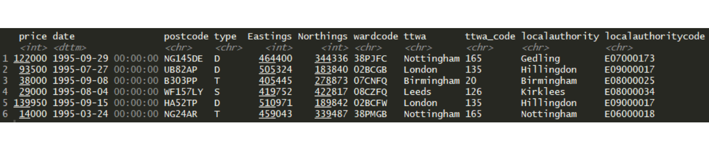
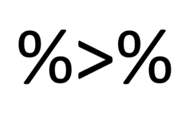
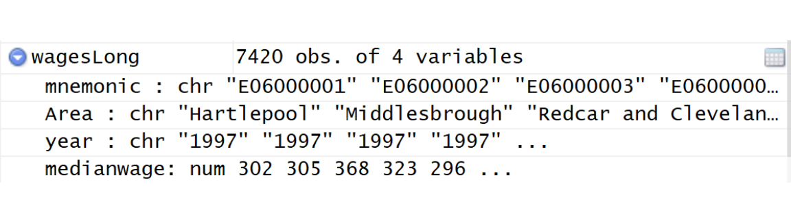
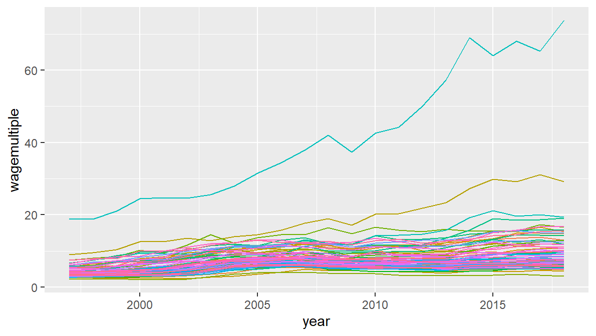
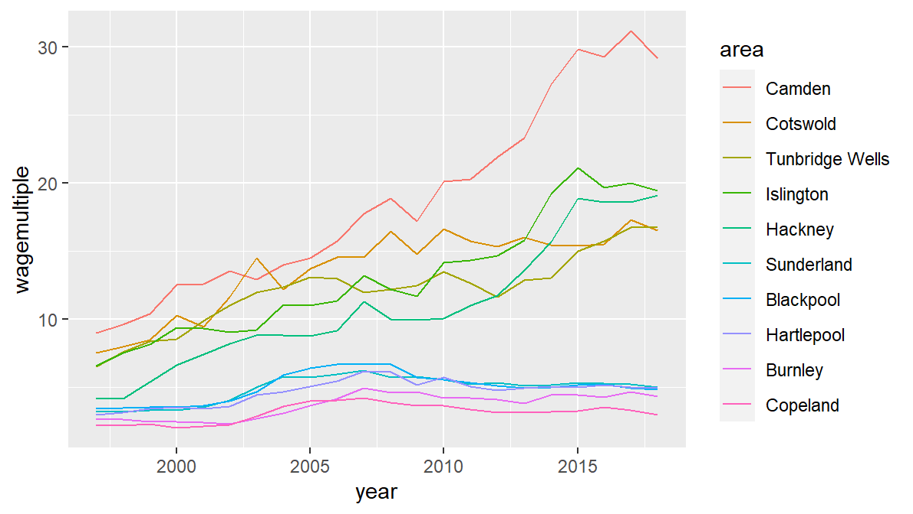

2 DATA WRANGLING & VISUALISATION
2.1 The first principle of data visualisation…
The first principle of data visualisation is: shaping the data is an essential part of building visualisations. It’s not just an annoyance: your visualisation goals will dictate the kind of shape the data needs to be made into.
We’ll use libraries from the tidyverse to do this. As Hadley Wickham says, ‘by constraining your options, it simplifies how you can think about common data manipulation tasks’.
We’ll be looking at two cheatsheets as guides to the two main libraries we will use: ggplot and dplyr. These two are the yin and yang of data visualisation in R. With dplyr, we’ll shape and squeeze our data into the right form to visualise what we want in ggplot.
We’re obviously not going to try and look at everything on these sheets. We’ll pick out a small number of examples to illustrate the underlying principles, with the hope that by the end of the course, you should have enough of an understanding of them to carry on your learning from them.
You’ve got copies of each of the cheat sheets. If you need them in future, they’re both available via RStudio’s help menu (or search for them online).
This part of the course is split roughly into two:
- We’ll learn some of the essential concepts of data wrangling in preparation for visualising by walking through a few typical script creation scenarios: getting our data, processing it, deciding what we want to do with it to prepare for visualising.
For this part of the course, I’ll be working through the material with you step by step, carrying out exactly the same tasks. Things will doubtless go wrong, often just misplaced brackets and the like - please ask if you’re stuck.
- The second part will be more free-form. There are a range of choices for you to play with. You’ll get to work through whichever you like, with help on hand (and you’ll get a break from me talking the whole time.) If there’s anything else you want to have a go at, let me know and I’ll try to help.
We’re going to try and fit a lot into one course: don’t worry too much if not all of it makes sense as long as the overall picture you get does make sense. I’ll try and make sure that everyone knows which bits they really need to have taken in.
We’ll only scratch the surface of what R and the tidyverse can do. But it should be a solid foundation for further exploration.
We’ll check in after every chunk of work to make sure everyone’s OK with where we’ve got to. Each part of the course builds on the other - it’s important that you feel like it’s making enough sense that you don’t get lost as we move on. Please do ask if anything is confusing. Any new programming concepts, even for experienced programmers is always confusing. I learned Java before R: that didn’t stop R being baffling for a long while.
Our data for the course: Land registry data on house prices in England. (We’ll also look at some other data and link it.)
All of the data for the workshop is open access: you can download it yourself for free. I’ve provided links and notes at the end of this document for that.
Our guiding question for digging into the data will be simple: can we see what impact the 2007/8 financial crash had on the English housing market? We won’t be using any sophisticated methods - the plan is just to see what visualising the data might show us.
Some random tips before we get started properly:
I’d recommend typing out as many of the R commands we’ll be working with where you can in the first part of the course - it’s by far the best way to learn and understand the code. But if you get bored of that, or for some of the larger chunks of code later, feel free to use any of the code sources I’ve supplied. The digital PDF and webpage also have links to the topics we’re covering, if you want to look at any of those during the course.
Learning some keyboard shortcuts helps massively. You don’t have to use them but, once learned, they’re hugely useful in R-Studio. I’ll explain them as we go along. I’ve also included a keyboard shortcut sheet for the ones you might want to use.
Oh and… what’s data wrangling? I refer you to Wikipedia. Really, it just means re-arranging data until it’s the shape we need. It has its own word now because we spend far more time doing this re-arranging than actual analysis.
Right! —>
2.2 Getting started
OK, let’s start by sorting out our project folder so we can access the data we’re all going to be working from. We’ll first need to copy the data folder to our own machines. Once you’ve done that, I’d recommend making it a new RStudio project via the top right button:
Navigate to your copied files and make a new project there. We can now access all the files and save our R script and visualisations here. Once you’re done, you can copy all this over to your USB stick or keep on your own drive.
So now: create a new R script for your programming and we can begin. Either use the menu (file/new) or the shortcut CTRL+SHIFT+N.
2.3 Loading the libraries
Many of the most important tidyverse libraries are packaged into one - including ggplot and dplyr, the two we’ll be using most heavily. We’ll start our script by loading this library. Stick this, and any later library loads, right at the top of your script:
library(tidyverse)When it loads, you’ll see the many different libraries that come in the tidyverse displayed in the console.
If the library isn’t yet installed, you’ll get an error. You’ll need to install it first. Because this only needs doing once, it’s best to do it in the console. If you discover any other libraries we use in the course are not yet installed, it’s same procedure.
Note: when installing, the library name needs to be in quote marks. But it’s not in quote marks when we actually load the library.
install.packages('tidyverse')2.4 Loading the house price data
OK, let’s get stuck in to the data we’re going to use. You can use the file pane, bottom-right, to have a look at the files. Click on the ‘data’ folder: as well as the little example dataframe we just looked at, this folder contains the following file:
- landRegistryPricePaidTopTTWAs.rds: a selection of England’s ten largest cities (by count of sales).
It is in RDS format: these are compressed R objects - they’re much smaller files than CSVs would be.
Let’s load the data. Try a hugely useful autocomplete feature: when typing the file name, get ‘data/land’ typed and then press CTRL + SPACE: this should list file names in the data directory. We’re after this one:
sales <- readRDS('data/landRegistryPricePaidTopTTWAs.rds')The head function will show the top few rows …
head(sales)… and will look something like this:

Each row is a single property sale. As you can see, the data has eleven columns with the following variables:
- price: the final sale value of the property
- date: when it was sold, to the day. This field is in a format that R knows is a date.
- postcode: the location of the property being sold
- type: whether the property is a detached house (D), a semi-detached house (S), a terraced house (T) or a flat (F).
Those four are all from the Land Registry data. Then we also have some extra location information:
- Eastings and Northings: these two columns give the exact geographical location for the postcode. (Its centroid.)
- wardcode: these are codes for the English ward the sale is in. There are many of these for each city and town.
- ttwa and ttwa_code: these are the travel to work area the sale is in. TTWAs are designed to capture each commuting area, so cities and towns will usually be at the centre of them.
- localauthority and localauthoritycode: we’ll use this later to match to wage data and work out a consistent house price metric.
Checking what time period the data covers with the range function, we can see we’ve got house sales from 1995 up until mid-June this year (2017) - we’ve got a bit more than two decades worth:
range(sales$date)## [1] "1995-01-01 UTC" "2018-12-23 UTC"TIP! If you need to read data in from a flat file like a comma-separated variable file, use the readr package from the tidyverse. We’ll be using this later. Base R reads csvs in with read.csv(). readr uses read_csv - using an underscore not a dot. Why use readr? It takes care of several otherwise annoying data format issues - most usefully for us, if you have dates in there, it makes them ready to be used straight away.
We’ll get to know the geographies better as we visualise them. But first…
2.5 Let’s jump right into ggplot
We can start making some ggplots immediately: these won’t be pretty, but we can use them to illustrate the basics of how ggplot works, step by step.
You should have ggplot already loaded as part of the tidyverse.
All we’ll do to start with: plot the locations of some of the sales, so we can see what the overall geographical reach of the data is.
As you can see from the environment pane, there are several million sales in the data (one sale per row). That would take a long time to plot, so we’re just going to take a smaller sample using dplyr’s sample_n function. This takes a random sample of rows from the dataframe. We’ll store the sample in a new variable. Here, we’re just getting ten thousand rows / sales.
saleSample <- sample_n(sales,10000)Let’s plot our sample of sales using ggplot. Get this coded first, then we’ll talk through what we just did.
Another new thing to note here: the second line follows a plus at the end of the first. If you type the plus then press enter, RStudio will automatically indent the next line for you. ggplot is fussy about this plus - it needs to be at the end of the line, it can’t be at the beginning of the next one:
ggplot(saleSample, aes(x = Eastings, y = Northings)) +
geom_point()So we can see house sales in different locations across England. But how did that work? Take a look at the cheatsheet: basics on page one has a little template explaining what ggplot requires to plot. It needs just the three things we supplied:
- The data. In this case, saleSample. That goes first.
- The mapping. This is done in the aesthetic function. (That’s what aes is short for.) In aes, we map our variables to the graphics’ aesthetics.
- The important principle here: each mapping requires a single column of data. This one requirement dictates how we must shape our data for ggplot. This is so important we’ll go over it again in a moment!
- Here, we’ve mapped two variables to the x and y aesthetics (which we’d usually think of as just a graph’s x and y axes) - but there are bunch of others. More on that next.
- the geometry. Again, look at your cheat sheet, page 1. Almost all of the first page gives you all the different geometries ggplot can use. We used geom_point so that x and y are mapped to points.
- You can also get a quick guide to the geoms using RStudio’s autocomplete. This will list them all and give a little help overview.
As with all other functions, for the full help page, use e.g.:
?geom_pointWhile we’re here: try the zoom button and export button above the plot. Each of the options will give you a pop-out version of the plot that can be re-sized with the corner handle. It can then either be saved or copied to the clipboard. We’ll look at how to save the plot programmatically shortly.
If you look at geom_point on the cheatsheet, you’ll see this list: ‘alpha, colour, fill, shape, size, stroke’. This is the list of other aesthetics you can map variables to when you’re using the point geometry. This list differs depending on what you use - the cheatsheet tells you which you can use for each geometry type.
These mappings all happen in the aes function, same as we did for x and y. So, for example, we can map colours to the TTWA / city.
ggplot(saleSample, aes(x = Eastings, y = Northings, colour = ttwa)) +
geom_point()
This is not a good map! But it illustrates how aes works. There are a few other new things here.
the ttwa variable is discrete: it’s a list of different places. ggplot figures this out and assigns one colour per category. We’ll look at what happens with continuous variables below.
ggplot has also automatically added a legend.
So back to the most important principle: ggplot wants each variable in its own column, in `long form’. This applies to each variable you map to an aesthetic.
Here’s a little illustration to help with the intuition. If we’ve mapped ttwa to the colour aesthetic thenggplot will work out how to map a colour to each discrete group within that variable. If the variable had been continuous, ggplot would have supplied a continuous scale.
Later, we’ll look at what to do if your data isn’t already in long form.
You can of course choose what values to assign to x and y. And notice what happens if you assign a discrete variable to one of the axes. Here we put property sale price on y and ttwa on x:
ggplot(saleSample, aes(x = ttwa, y = price)) +
geom_point()Again - ggplot knows it’s discrete and labels each place. The plot itself is, again, fairly awful: overlapping points and labels, poor axis ticks etc. We’ll come back to all the prettifying things like labelling later, but let’s stick to the essentials for now.
So if we want to know something about the impact of the crash, we’ll need to start using dates. But using them raw isn’t a great idea:
ggplot(saleSample, aes(x = date, y = price)) +
geom_point() 
ggplot can plot dates correctly and provides axis ticks - but using each day is far too messy. We need to do two things to fix this:
- Create a better date category - we’ll break the data down by year.4
- Summarise the housing data based on this.
There are two ways to summarise data for ggplot:
- ggplot’s own stat functions (more on these after the next section…)
- Wrangling into the right shape ourselves using dplyr and other R functions. While rather more work, this is the only way to fully control what you want to visualise. Learning about wrangling and dplyr will be a big chunk of the course.
First-up though: making a useable date column.
2.6 The lubridate library
Time for another library: lubridate. As you’d expect, this makes working with dates a lot easier. Put this library call with the others at the top of the script.
library(lubridate)Again, if it’s not already installed, do so in the console:
install.packages('lubridate')The date column in the original data is already in datetime format. This is handy: formatting this ourselves is a faff. (See the tip above about using readr to make sure dates load in this format.) It means that we can now use the lubridate library to add a column containing the year of the property sale:
sales$year <- year(sales$date)If you go back to your dataframe view tab or use the console, you’ll see it’s been added:
We can use the table function to get a quick look at the result, counting the number of sales per year:
table(sales$year)You can also get sales per year by type:
table(sales$year, sales$type)2.7 Using ggplot’s own stat functions
Now there’s a year column, we can start summarising the data for each year. Going back to the original question - what impact did the 2007/8 crash have on the housing market - we can start by asking:
What happened to the number of sales? To find this out, we can just count the number of sales per year.
As mentioned, one way to do this is to use ggplot’s own summarising functions. These can be a really useful way to quickly get an overview of the data.
For the plots done so far, all mappings have taken the variable’s value and mapped it directly to a value on the graph. Instead, ggplot stats create a summary variable first and then plot it.
This makes more sense when seen in practice. Here’s a simple bar chart: all it’s doing is counting the number of sales in each year:
ggplot(sales, aes(x = year)) +
geom_bar()So it looks like, for these TTWAs, the number of sales halved after the crash and never recovered. As before, we can assign the TTWA to the bar colour - though this time it’s fill (‘colour’ is the bar outline). London has vastly more sales per year than any other TTWA.
ggplot(sales, aes(x = year, fill = ttwa)) +
geom_bar()There are a few principles going on here:
- ggplot will use defaults where it can. In this case, we’ve not included a y-axis variable mapping in aes because the stat in geom_bar counts the number of observations in each year and so doesn’t need it. Indeed, if you try and give it a y variable, it will throw an error:
ggplot(sales, aes(x = year, y = price, fill = ttwa)) +
geom_bar()- Some geometries use ggplot stats, others will plot your data directly. How to tell the difference?
- You’ll become familiar with the ones used for summary stats - on the cheatsheet, a lot of them are under one variable, discrete x, continuous y and continuous bivariate distribution. We’ll cover some more in a moment.
- But there’s a principle at work: every geom has a stat. It’s just that some have stat = “identity”, telling them to plot the data directly. Take a look at the help for geom_bar:
?geom_barThe stat argument is actually telling the geom to use a specific stat function: these are all listed in the left bar of page 2 of the cheatsheet. In the help file for geom_bar, its stat function is also there: stat_count. These can actually be used interchangeably. Note that stat_count’s default geom is “bar”:
ggplot(sales, aes(x = year, fill = ttwa)) +
stat_count()Under usage, the help page lists all of geom_bar’s arguments: the ones given here are its defaults. These are the two most important:
- stat = “count”: tells geom_bar to count observations in each group
- position = “stack”: if there are groups, this tells geom_bar to stack them on top of each other. The cheatsheet lists these on page 2. We can override the default simply. For example, telling geom_bar to find the proportion of sales in each year by filling from top to bottom:
ggplot(sales, aes(x = year, fill = ttwa)) +
geom_bar(position = 'fill')In comparison, look again at the help for geom_point, that we used to begin with:
?geom_pointIts default stat is “identity”: this mean it maps data points directly to the aesthetic.
Another principle here:
- We’ve said that ggplot will attempt to plot your data if it can, but certain geometries require certain types of data. As with geom_bar - it requires a categorical x variable, in this case we’ve given it each year.
If we’d wanted to plot a continuous x variable as a bar chart, there’s one under ‘one variable continuous’ on the cheat sheet. So say we wanted to use date directly, geom_histogram will put them into equal sized bins:
ggplot(sales, aes(x = date)) +
geom_histogram()## `stat_bin()` using `bins = 30`. Pick better value with `binwidth`.
There are a lot of different stat functions, each with their own default geoms. When first learning ggplot, it’s just a matter of getting to know them through use. ggplot’s help is really helpful! It’ll help for working out what default stats each of them uses.
We’ll come back to one or two of these later. For now, on to using dplyr to shape data for visualising:
2.8 Getting started with dplyr and piping
We’re going to be mainly using dplyr to reshape our data into different forms for the visualisations. (We’ve already loaded this library as part of the tidyverse package.)
Before we get to dplyr itself - Piping!
Piping is magic: it will make everything spectacularly easier and tidier.
Specifically, this is the pipe operator. It loads with dplyr and looks like this:

A quick recap: pretty much everything in R is a function. For example, to find the square root of a number, use the sqrt function:
sqrt(100)## [1] 10Functions can nest in functions. If, for some reason, you wanted to find the base 10 log of the square root of 100, you could nest like this:
log10(sqrt(100))## [1] 1And so on, if you had more complex things to accomplish. The pipe operator makes this much more intuitive and readable. So instead of the above, we can do this:
100 %>% sqrt()## [1] 10100 %>% sqrt() %>% log10()## [1] 1So what we’re doing here: piping the result from one function into the next until we get the output we’re after. The number 100 is piped into the sqrt function - the output from that function (10) is piped into the log function.
The power of this is:
- It lets us create a conveyor belt for what we do with data in a way that can very easily be changed at any stage in the process.
- dplyr is designed with this in mind.
As with the assignment operator, typing percent-more-than-percent every time you want the pipe operator is a pain: so RStudio has another shortcut key.
This time it’s: CTRL + SHIFT + M. Try this in the next bit of coding.
This is also on your one page shortcut key guide.
2.9 dplyr’s verbs
We can use the pipe operator to link dplyr verbs together - these are functions that reshape the data in various useful ways. We’ll go through them one by one and end with a ggplot.
Let’s start by finding a summary statistic. We’ll find the average price in the housing data.
It’s good practice to have each dplyr verb on its own line. Notice how RStudio helps with this too: pressing return at the end of one line, after the pipe, automatically indents the next line. We’ll do the same with ggplot in the next section.
sales %>%
summarise(mean(price))## # A tibble: 1 x 1
## `mean(price)`
## <dbl>
## 1 225522.Verb 1: summarise. This passes all values from the column name you pass - in this case price - and we tell it to find the mean. It then gives you a single row back with the summary in.
Notice here: dplyr (like almost all tidyverse functions) takes in bare variable names. It knows the variable is from sales as we’ve just piped that in.
But that’s the average price for the whole time range - what about one year?
Verb 2: filter. We can filter by year. So we’ve now got two pipe operators:
sales %>%
filter(year == 2018) %>%
summarise(mean(price))## # A tibble: 1 x 1
## `mean(price)`
## <dbl>
## 1 390511.The filter verb uses logical operators to query each row in the data. The full list of these is on the data wrangling cheatsheet. Here they are again:

Note especially the double equals we just used: this allows us to find exact matches for values and text (in this case, matching to 2015).
A quick reminder of how R uses logical operators to create TRUE/FALSE vectors. (TRUE/FALSE values are also known as boolean values.) Here’s an illustration of two logical operators checking their condition against each row of the chosen variable:
So all filter does is take in a vector like this …
ttwa=='Bradford'## [1] FALSE FALSE FALSE TRUE TRUE TRUE TRUE FALSE FALSE FALSE… and then use that to keep the TRUE values. This is worth repeating, as once that’s clear, you can produce any kind of boolean vector you like to filter the data. More on this shortly.
So: filter picked out one particular year. But what if we want average price for each year?
Verb 3: group_by. This will group the data by the category or categories we give it. The next function will then apply to each group. You’ll get one row per group with the mean in:
sales %>%
group_by(year) %>%
summarise(mean(price))## # A tibble: 24 x 2
## year `mean(price)`
## <dbl> <dbl>
## 1 1995 79425.
## 2 1996 84693.
## 3 1997 94675.
## 4 1998 104499.
## 5 1999 120137.
## 6 2000 137448.
## 7 2001 151563.
## 8 2002 173274.
## 9 2003 188621.
## 10 2004 212300.
## # ... with 14 more rowsThat’s given us average price per year - but has just showed some of them in the console. To be able to work with this returned dataframe, we need to assign it to a variable name:
saleSummary <- sales %>%
group_by(year) %>%
summarise(mean(price))You’ll see saleSummary has appeared in the environment pane: click on it to view the new summary data.
One more thing before making another graph: if we want to find out average price per year and per city/ttwa, just include both in the group_by function.
We’ll add one more thing here too. dplyr defaults the summary variable name to mean(price) - but we can set the name ourselves in summarise if we want something more sensible:
saleSummary <- sales %>%
group_by(ttwa,year) %>%
summarise(meanPrice = mean(price))## `summarise()` has grouped output by 'ttwa'. You can override using the `.groups` argument.saleSummary now has one column each for ttwa and year in long format, each with a price average. Which is exactly what we need to map each of those to aesthetics in ggplot.
Note also: an advantage of this separate-line approach to coding is: it’s easy to try different things, keep them and comment them out. So for instance, for the previous code, we could have kept the filter verb in place in case we wanted to come back to it:
saleSummary <- sales %>%
#filter(year == 2018) %>%
group_by(ttwa,year) %>%
summarise(meanPrice = mean(price))This can now go straight into ggplot:
ggplot(saleSummary, aes(x = year, y = meanPrice, colour = ttwa)) +
geom_point()
2.10 And a few extras while we’re here…
There are a number of other dplyr verbs and we’ll cover some of them below, but for now, let’s just make some additions to what we’ve done, to introduce some new ideas.
- Using another geometry
First: we can use a different geometry - we don’t have to stick to points. With data over time, it makes sense to link time points with a line. As you might guess, the geom_line geometry will do this. Comment out geom_point for now and add it:
ggplot(saleSummary, aes(x = year, y = meanPrice, colour = ttwa)) +
geom_line()
#geom_point()- Layering geometries
You’re not limited to one geometry: you can layer them. So if we just un-comment geom_point (and make sure there’s a plus at the end of geom_line):
ggplot(saleSummary, aes(x = year, y = meanPrice, colour = ttwa)) +
geom_line() +
geom_point()
Note that our aesthetic mapping of colour to TTWA has applied to both lines and points. More on that shortly.
What if we want geom_point to represent something different? Well…
- Summarising for more than one variable
Say we want to show the number of sales for each TTWA in each year. The first thing to do is count the sales via dplyr’s summarise. This requires an update to our previous dplyr code - just add another summary variable to the summarise function:
saleSummary <- sales %>%
group_by(ttwa,year) %>%
summarise(meanPrice = mean(price), countOfSales = n())## `summarise()` has grouped output by 'ttwa'. You can override using the `.groups` argument.You’ll see we now have countOfSales as well as meanPrice:

What does n() do? It’s dplyr shorthand for ‘number of observations’: if we’ve grouped the data, it will give us the number of observations per group. (You can see this and other summarise functions on page 2 of the dplyr cheatsheet.)
Now we have a count of sales, we can use this directly in geom_point. This is done by using the aes function in the geometry itself:
ggplot(saleSummary, aes(x = year, y = meanPrice, colour = ttwa)) +
geom_line() +
geom_point(aes(size = countOfSales))The size of the points now represents count of sales. ggplot gives it its own legend.
Two things to note here:
- If you’ve mapped an aesthetic in the top ggplot function it will cascade to all other geometries. However, we can over-ride this within those geometries using their own aes function.
- The order of geometries determines which draws first. This can be used to control the look. We’ll do that next.
- The order of drawing and deciding where to map aesthetics
Say we don’t want colour to be mapped to both points and lines. There are a couple of options - one (the most flexible) is to overwrite the colour mapping in geom_point by choosing our own colour directly.
- We do this by setting the points’ colour outside of aes to what we want. We’re not mapping to any variable this time, just setting it to a single value. There are a list of named colours we can use, including ‘grey’ (more on this list below):
ggplot(saleSummary, aes(x = year, y = meanPrice, colour = ttwa)) +
geom_line() +
geom_point(aes(size = countOfSales), colour = 'grey')
The general principle here:
- Each list of aesthetics under the geometries on the cheatsheet can be either mapped to a variable (by including them in the aes function ) or set directly to a single type.
- Setting these within a geom has the effect of over-riding the cascading value.
In this graph, points are drawn over the lines. This might look better if they were under them. To do this, just change the order. Having everything on separate lines makes this a little easier, though be careful to make sure pluses are in the right place.
Also: remember you can use ALT + up/down arrows to move lines of code. So, shifting geom_point behind geom_line (and remembering to shift the plus as well…):
ggplot(saleSummary, aes(x = year, y = meanPrice, colour = ttwa)) +
geom_point(aes(size = countOfSales), colour = 'grey') +
geom_line() # <<< moved this down one line and moved the plus too
2.11 Using scales to control appearance
The last graph was getting there: it’s possible to see that prices were rising up until the crash - we’ll need some more tweaks to properly compare places with different average house prices.
(The count of sales isn’t the clearest way to show that the rate dropped - our earlier geom_bar did that better, but it illustrates using two geoms.)
It would be good to change a few things to make this more clear. One of the most essential ways of controlling appearance is through scales. The principle here is:
Every aesthetic mapping has its own scale. Each of these can be controlled.
This is true for the x and y mappings as well as everything else, including the colour, fill and size mappings we’ve used so far.
The basics are:
- All scales are controlled using functions that begin with scale_. Page 2 of the ggplot cheatsheet lists them.
- As the cheatsheet shows, the format is (for example) **scale_*_continuous** - replacing the asterisk with the mapping we want to control.
The most obvious kind of scale control you’ll want to do is on the x and y axes mappings. Particularly with prices, the most common of these has its own function: scale_y_log10 and scale_x_log10 both change the scales to log (base 10).
For house prices, this is ideal: it makes proportional change comparable so that (e.g.) London’s much higher prices can be visually compared to cheaper TTWAs.
This scale can be added with one line:
ggplot(saleSummary, aes(x = year, y = meanPrice, colour = ttwa)) +
geom_point(aes(size = countOfSales), colour = 'grey') +
geom_line() +
scale_y_log10() # <<< new log y scaleWhere previously there appeared to be a marked difference in the post-crash response, the log scale shows that is perhaps not the case. London is still its own thing, as always.
Note: these are 10 of the richest areas. There will be a chance later to compare richer and poorer TTWAs to see if there was any difference.
Scale changes for other aesthetics have a range of options. An example will make this more clear. Say you want to control the size range for the points in the previous plot. Add the following scale code.
ggplot(saleSummary, aes(x = year, y = meanPrice, colour = ttwa)) +
geom_point(aes(size = countOfSales), colour = 'grey') +
geom_line() +
scale_y_log10() +
scale_size_continuous(range = c(0,10))Another note: for things like scale changes, it doesn’t matter where in the ggplot argument order they go. Line order only makes a difference for the order that geoms draw in.
geom_point’s circles are larger - but London is dominating, having by far the most sales. One option is to remove London to see what the others look like.
We can use the dplyr verb filter to do this: it’s just a function, so as with anything else in R, it can be used anywhere. Here, we tell filter to give us all ttwas except London:
ggplot(saleSummary %>% filter(ttwa!='London'),
aes(x = year, y = meanPrice, colour = ttwa)) +
geom_point(aes(size = countOfSales), colour = 'grey') +
geom_line() +
scale_y_log10() +
scale_size_continuous(range = c(0,10))Why did all the points become larger? Because the top of the range was previously London prices, making all the others relatively lower. Removing London changes that.
Note, the range size’s appearance will vary depending on the size of the overall plot. This can be seen if you look at it via zoom or export/copy to clipboard.
Is grey really working? If we want to try those points coloured by ttwa again, just remove the override (delete colour = ‘grey’):
ggplot(saleSummary %>% filter(ttwa!='London'),
aes(x = year, y = meanPrice, colour = ttwa)) +
geom_point(aes(size = countOfSales)) + #<<< removing colour = 'grey'
geom_line() +
scale_y_log10() +
scale_size_continuous(range = c(0,10))
Well, that’s messy! One more option that can sometimes make otherwise unreadable graphs workable: we change change alpha. This controls transparency:
- alpha = 1 means perfectly opaque
- alpha = 0 means perfectly transparent
So giving geom_point a value between those two (and note, we’re setting it directly so it’s outside of the aes function):
ggplot(saleSummary %>% filter(ttwa!='London'),
aes(x = year, y = meanPrice, colour = ttwa)) +
geom_point(aes(size = countOfSales), alpha = 0.3) + #<<< adding alpha value here
geom_line() +
scale_y_log10() +
scale_size_continuous(range = c(0,10))2.12 Scales for controlling colour
We’ve been using ggplot’s default colour scheme so far but - as with other scales - we can choose a colour scheme for the colour mapping ourselves. There are a huge number of options here, many on page 2 of the ggplot cheatsheet - let’s just cover two.
As before, we select the aesthetic by having colour in the middle of the function name (or fill if you’re working with, for example, the colour fill of bars.) We’ll look at these two options:
- scale_colour_brewer
- scale_colour_manual
The first of these gives us a range of pre-set palettes to choose from, based on the colour brewer palettes. They’re broken into three types: sequential, qualitative and diverging. There is a function for viewing them (this is also on the ggplot cheatsheet) but you need to load the RColorBrewer package:
library(RColorBrewer)
display.brewer.all()To apply one of these to our data, we just need to add the following. Pick a palette name from the list then add this to the end of your previous ggplot code (remembering the plus on the previous line!) ->
scale_color_brewer(palette = 'Paired')ggplot(saleSummary %>% filter(ttwa!='London'),
aes(x = year, y = meanPrice, colour = ttwa)) +
geom_point(aes(size = countOfSales), alpha = 0.3) + #<<< adding alpha value here
geom_line() +
scale_y_log10() +
scale_size_continuous(range = c(0,10)) +
scale_color_brewer(palette = 'Paired')Another option is to set the colours manually. There are a huge number of pre-defined colour names in ggplot. This website has the full reference: sape.inf.usi.ch/quick-reference/ggplot2/colour
Or you can also use hex values. Here’s some I took from www.color-hex.com. We have nine TTWAs to colour so I’ve got nine values. Either set them directly in ggplot or put them in a vector to keep the code tidy.
newcols = c('#ff9500','#154935','#f7786b','#410c37',
'#1242b6','#cc554c','#946b2d','#e0301e','#607d8b')Then use scale_colour_manual to apply them:
scale_color_manual(values = newcols)ggplot(saleSummary %>% filter(ttwa!='London'),
aes(x = year, y = meanPrice, colour = ttwa)) +
geom_point(aes(size = countOfSales), alpha = 0.3) + #<<< adding alpha value here
geom_line() +
scale_y_log10() +
scale_size_continuous(range = c(0,10)) +
scale_color_manual(values = newcols)2.13 Using factors to control order of variables
Up to now, the TTWAs have appeared in alphabetical order in the legend - which is a bit visually confusing, as the highest prices are nearer the top. It would be nice if the legend matched this.
This is usually a pain to deal with in R but, again - tidyverse to the rescue. The forcats library helps us with categorical data like place names. Let’s load it and see what it does:
library(forcats)If you don’t want to think about what it’s doing, you can just use forcats to re-arrange the order of TTWAs directly in ggplot. Building on our previous graph (though adding London back in), we can just use the fct_reorder function directly in ggplot. Give it the variable to reorder and another variable to reorder by, in this case meanPrice. Notice the minus sign: this will make it descending order.
ggplot(saleSummary,
aes(x = year, y = meanPrice, colour = fct_reorder(ttwa,-meanPrice))) +
geom_point(aes(size = countOfSales), alpha = 0.3) +
geom_line() +
scale_y_log10() +
scale_size_continuous(range = c(0,10))We’ll look a bit more at what fct_reorder does when covering the dplyr mutate verb below.
There’s a lot more about controlling graph appearance to talk about, but a last couple of tips for controlling graph view before moving on for now…
First-up: if you want to control the part of the data that’s viewable, you can use one of the coordinate functions. With coord_cartesian, the exact window can be set.
So say we only want to look at data between the years 2000 and 2008:
ggplot(saleSummary,
aes(x = year, y = meanPrice, colour = fct_reorder(ttwa,-meanPrice))) +
geom_point(aes(size = countOfSales), alpha = 0.3) +
geom_line() +
scale_y_log10() +
scale_size_continuous(range = c(0,10)) +
coord_cartesian(xlim = c(2000,2008)) # <<< set the view windowSecond-up: how to control the legends? If they’re in the wrong order, or you want to remove them entirely, use the guides function.
If we want to force the count of sales size legend below the TTWA colour guide, set the order directly by adding this to the ggplot code:
guides(colour = guide_legend(order = 1),
size = guide_legend(order = 2))Or to get rid of a legend entirely, just use its aesthetic name and set it to FALSE (or F for short - both work):
guides(size = F)There’ll be a lot more info on controlling appearance later.
2.14 Joining data sources together
It would be very useful to be able to adjust our house price data to something that’s consistent over time. But how? We could use some value for inflation, but this doesn’t actually include house price change and would only provide a single adjustment figure for the whole of England.
Another option is to use wages over time. Not only does this give a simple measure of house cost - house price as a multiple of the average wage - but it varies by region, giving a much more localised measure.
To do this, we need to link the housing data to wage data. Linking two datasets together is often an essential part of visualisation when there is a need to compare or supplement information.
R’s base commands are not bad for this, but dplyr’s join functions do the job a little bit quicker.
So first, let’s load the wage data (taken from NOMIS). It’s in CSV format and we’ll use the readr library mentioned earlier, loaded as part of the tidyverse package. Again, remember - you can type ‘data/med’ and use autocomplete to get the rest of the file name.
wages <- read_csv('data/medianWages_localAuthority.csv')Click on the new dataframe in the environment panel: it consists of:
- a column each for the local authority name and code (the ‘mnemonic’ column)
- One column per year from 1997 to 2018
2.15 `Gathering’ into long form
We want to merge this with the housing data summary so that each median wage per year per local authority is matched against the average price at that time and place.
But this is currently wide data - the year variable is spread across columns. So the first thing to do: gather the years into their own column so that it matches the single year column in the house sales data.
This can be done with another tidyverse library: tidyr. This just requires two things:
- Give tidyr a name for the key and value columns. You can decide on these names. Let’s go for a key of year and value column name as medianwage.
- Tell it which columns to gather.
We can use the pipe operator. This looks like:
wagesLong <- wages %>%
gather(key = year, value = medianwage, `1997`:`2018`)Note: in this case, the column names in the range we passed in needed surrounding with backticks (very top left on the keyboard). Why? If column names are numbers, R can’t parse them well - the tick marks are needed to pass in the names correctly. If they had been plain text, the ticks marks wouldn’t be needed. Another joyous R foible.
Take a look via the environment pane: we now have the wage data in long form. Note: we didn’t have to say anything about the remaining local authority columns: tidyr automatically repeats these for us.
Now it’s in long form, here’s an opportunity to use another stat from ggplot
ggplot(wagesLong, aes(x = year, y = medianwage)) +
geom_boxplot()
A boxplot can help get a quick look at the shape of the data. In this case, it’s easy to see median wages going up over time - so the data looks sensible.
2.16 Saving and reloading the housing data
Because memory is a little tight, let’s load a different selection of the housing data. This is in exactly the same format as before, it’s just sales from a selection of local authorities, rather than TTWAs.
If you want to save your previous sales data or any of your other dataframes, now would be a good time. We can then overwrite some of these files without fear of losing anything. Although we’ve only added the year field so far, so nothing drastic will be lost.
The saveRDS function is a good way to do this: it saves the dataframes as compressed objects that (a) are very compact and (b) reload in exactly the same form. So for instance, saving to our data folder:
saveRDS(sales,'data/salesTTWAwithYearAdded.rds')And feel free to save any other dataframes you want to return to.
We can then overwrite the sales variable with the new price data. Again, it’s a long file name so use autocomplete again!
sales <- readRDS('data/landRegistryPricePaidLocalAuthoritySelection.rds')And we’ll also need to re-add the year column:
sales$year <- year(sales$date)2.17 Merging the housing and wages data
Now we’ve got both of our datasets to combine, let’s stop for a moment and think through what we’re aiming for.
- The (long) wage data gives us the median wage for each year and each local authority - one row for each of these combinations.
- We want to know how many multiples of this wage you’d pay for the average-priced house in each local authority.
- Which means, first - we need to repeat our dplyr summarising, but this time at the local authority level, so it matches our wage data. We want it to also have one row per year / local authority combination.
So we first need to summarise the sales data as we did before. Notice how dplyr makes this a simple change compared to before. We just replace ttwa with the new geography:
saleSummary <- sales %>%
group_by(localauthority,year) %>%
summarise(meanPrice = mean(price))## `summarise()` has grouped output by 'localauthority'. You can override using the `.groups` argument.Looking at the result, we can see this matches the structure of wagesLong: one column for year and one for the local authority.
This stuff is (for me at any rate!) always a little confusing!. It is rarely an intuitive process! Taking the time to look at the data in the View panel can be really helpful for making sense of what’s going on.
We’re now ready to merge in the median wages.
The dplyr cheatsheet has a neat diagram showing our various joining options. We want to use an inner join because we only want to keep local authorities that the two dataframes have in common.

When doing joins, it’s generally wise to make a new variable. Joins often go wrong on first attempts: it’s useful to be able to compare with the previous data to make sure it’s done what you wanted it to.
Note also: when merging/joining, it’s often necessary to do some checks that the data is formatted in the same way in both cases for the join fields, especially for variables like postcodes that may contain spaces. We’ll see an example of this in a moment…
The dplyr cheatsheet shows how to use join to merge on single variables - that’s nice and straightforward. But there are two more things to consider here:
- We want to join on both year and local authority. This is solved by passing in a vector of the columns to join on.
- The variable name containing the local authorities is not the same in both dataframes. This is solved by supplying both names connected with an equals.
This looks like this, and should work…
price_n_wage <- inner_join(
wagesLong,
saleSummary,
by = c('year', 'Area' = 'localauthority')
)… but, oh dear, not quite. What went wrong? This is a rare occasion when an R error message is actually informative: ``Can’t join on ‘year’ x ‘year’ because of incompatible types (character / numeric)’’
Ah: the year variable in one of them is in character format, not number. But which? Looking in the environment panel, we can click on the arrow symbol to look. This reveals, under wagesLong:

The `chr’ next to year show it’s a character column. So when we gathered the year column names, they were kept as characters. Before we can merge, we have to make them the same format:
wagesLong$year <- as.numeric(wagesLong$year)Looking back in the environment panel, wagesLong’s year column is now showing itself as num. And now we should be able to join:
price_n_wage <- inner_join(
wagesLong,
saleSummary,
by = c('year', 'Area' = 'localauthority')
)Check price_n_wage via the environment panel: we’ve now got mean price and median wage in the same rows.
Now we’ve got those columns together, there are two more things to do:
- It’s currently the weekly median wage. We want yearly, to get house price as a multiple of yearly pay.
- Once we’ve got yearly pay, turn the house prices into a multiple of this.
How? Time for:
Verb 4: mutate. This allows us to make whole new variables and attach them to our existing dataframe.
All mutate does: it creates new variables and attaches them to the existing dataframe. This can be something as simple as a single value. Or, say we want to create a flag indicating areas with a median wage above £300 a week. Using the pipe operator, that would look like:
price_n_wage <- price_n_wage %>%
mutate(wages_above_300 = medianwage > 300)Incidentally, we don’t really need that column, so we can drop it with select and using a minus:
price_n_wage <- price_n_wage %>%
select(-wages_above_300)We want to use mutate for those two jobs: convert the weekly wage to a yearly one, and divide the mean property price by the yearly wage to get a wage multiple value as a house price index.
As with summarise, mutate can do multiple variables at the same time. And, very handily, dplyr is also a lazyeval function. Which means what? This:
We can define one variable and then use it immediately in the next one. So we can work out yearly pay, then immediately use that to find the house price multiple. Thus:
price_n_wage <- price_n_wage %>%
mutate(
medianwageyearly = medianwage * 52, # weekly wage to yearly wage
wagemultiple = meanPrice / medianwageyearly # house price as multiple of that yearly wage
)Look again the the price_n_wage dataframe to check it’s done what we wanted - and then we can try a plot.
There are too many local authorities to fit in a legend, so we can use the guides code mentioned above when we plot, to remove the legend so we can get a look at all the data together without the legend messing up the plot. (Try it without the guides function to see what I mean.)
ggplot(price_n_wage, aes(x = year, y = wagemultiple, colour = Area)) +
geom_line() +
guides(colour = F)
So: we now have house prices as a ratio of median yearly wages. And there’s one crazily high outlier and it’s difficult to see any effect from the crash. But there are a lot of local authorities here - how to pick out ones we want to look at?
2.18 Choosing a subset based on some criterion
A useful first step to deciding how to pare down your data is to make an ordered list of some variable of interest to look at. So say we want to see:
- The order of wage multiples in the final full year of the data
The advantage of making a separate list is: we can then use it as a tool for selection. But first, let’s make it. We can just use filter to pick out the year we want - but here’s a new verb:
Verb 5: arrange. This re-orders the actual dataframe much as sort does in Excel. That’s quite different to anything else we’ve look at, where the actual row order of the data itself didn’t really matter. (It has no impact on grouping or the order of category drawing, for instance).
This is really useful for two reasons: first, if we actually want to see the order ourselves. Second, there are some functions that depend on data order, such as lag (see the window functions on the dplyr cheatsheet).
So here’s the code:
- use filter to get 2018 only then
- use arrange to sort the whole dataframe by the wage multiple. Make it in descending order with the minus.
price_n_wage2018 <- price_n_wage %>%
filter(year == 2018) %>%
arrange(-wagemultiple)Take a look at the new dataframe: the highest wage multiple is at the top and we can see what local authority it applies to. No surprise, London local authorities dominate the top of the list. And right at the top, way out in the lead, is Kensington and Chelsea. Could this be a combination of England’s most expensive housing with a mixed population (so a lower median wage)?
We can use a dataframe like this to guide subsetting decisions for graphs. The essential principle is to use our selecting dataframe to subset the zones we want.
Say we want to look only at the ten local authorities with the lowest wage multiple in 2018. By looking at the data, we can see this is those with a wage multiple below 5.78.
zoneselection <- price_n_wage2018 %>% filter(wagemultiple < 5.78)Or, because the data is ordered by wage multiple, we could just grab the bottom ten from the dataframe using the tail function (the opposite of head, this gives us the last rows):
zoneselection <- price_n_wage2018 %>% tail(10)Once have this selection, we can tell ggplot: ``filter areas by those %in% our zone selection’’. This is the same principle as when we removed London - using a logical operator in filter:
ggplot(price_n_wage %>% filter(Area %in% zoneselection$Area),
aes(x = year, y = wagemultiple, colour = Area)) +
geom_line() 
The %in% operator is fantastic: it can be used for multiple selections. As with everything else in R, it works with vectors - we just passed it a dataframe column, which is a vector. If we wanted to pass a vector directly, we could - e.g.:
ggplot(price_n_wage %>% filter(Area %in% c('Camden','Oxford','Wirral','Liverpool')),
aes(x = year, y = wagemultiple, colour = Area)) +
geom_line() So the impact of the crash appears to be quite apparent in some of the local authorities with the cheapest housing. Wage multiples appear to have decreased over time since the crash.
You might also want to select particular row numbers based on the data you can see in the View panel. Row numbers are shown on the left. Say we want to look at the top and bottom five but exclude Kensington and Chelsea. We can use a new dplyr verb:
Verb 6: slice. Pass in the row numbers you want - simple. Put a minus before the selection to keep all but those. Place in a vector for multiple selections.
#Top ten, excluding Kensington and Chelsea (no vector function needed)
zoneselection <- price_n_wage2018 %>% slice(2:11)
#Top and bottom five, excluding Kensington and Chelsea
#Use a vector function for multiple selection
zoneselection <- price_n_wage2018 %>% slice(c(2:6,72:76))So: plotting our selected top and bottom five. Let’s also add the fct_reorder code we used before to make the legend order more readable. And we’ll relabel the legend while we’re at it.
ggplot(price_n_wage %>% filter(Area %in% zoneselection$Area),
aes(x = year, y = wagemultiple, colour = fct_reorder(Area,-wagemultiple))) +
geom_line() +
labs(colour = 'area')
The advantage of using a selection dataframe or vector like this: the ggplot code doesn’t need to change. You just need to change the selection.
Pausing for a moment: looking at the plot of top and bottom local authorities by wage multiple, it’s easier to see something about the impact of the crash: places with cheaper housing have seen a drop in value, relative to wages. Pricier areas have carried on their upward climb, after a brief dip.
We’ll come back to the wage multiple data in the facets section later, if you want to look at this in more detail.
We’ll stop there, but it’s worth mulling the following: if we plot wage multiple of house price versus the actual wage…
ggplot(price_n_wage2018, aes(x = wagemultiple, y = medianwage)) +
geom_point()
… while there’s mostly a linear positive relationship, there are outliers in both directions: Kensington and Chelsea we’ve already seen, that’s the point on the right. But there are also places with very low wage multiples but high median wages. How might you dig into that further?
2.19 Saving ggplots as image files
Lastly, let’s save a plot as an image file. To do this, we need to assign the plot to its own variable. If we re-run the previous ggplot of top and bottom wage multiples, it’s done like this - assigning to a variable as we would with any other assignment:
zoneselection <- price_n_wage2018 %>% slice(c(2:6,72:76))
output <- ggplot(price_n_wage %>% filter(Area %in% zoneselection$Area),
aes(x = year, y = wagemultiple, colour = fct_reorder(Area,-wagemultiple))) +
geom_line() +
labs(colour = 'area')If you run that, you’ll see the plot does not immmediately output to the plot window. To do this, just call the variable, as we’ve done with any other in the console. This will output our plot:
outputNow that we’ve got the plot assigned to output, we can use it to save as an image. If there isn’t already a (currently empty) images folder in your project root folder, create one now. You can do that within RStudio using the New Folder option in the Files tab. Our output variable containing the plot goes into the ggsave function:
ggsave('images/topAndBottomLAs_wageMultiples.png', output, dpi = 300, width = 7, height = 4)Some other points about ggsave:
It works out what image format to save from the file name. In this case, it saves a PNG.
DPI controls ‘dots per inch’. Higher values will be higher-resolution.
Width and height will determine the relative size of text and features in the plot, not dpi. So, for example, see what happens when doubling both width and height:
ggsave('images/topAndBottomLAs_wageMultiples_large.png', output, dpi = 300, width = 14, height = 8)Whereas if we make a low-res version but keep the dimensions the same:
ggsave('images/topAndBottomLAs_wageMultiples_lowres.png',
output, dpi = 75, width = 7, height = 4)2.20 Time for a pause!
So you’ve successfully loaded data, wrangled it and visualised it. Just a quick reflection on how we did that, before moving on to the second part of this section:
We used a bunch of tidyverse libraries to process and visualise data. These are all designed with the same philosophy of `constrain to simplify’.
ggplot works with ‘long’ data: a single column maps to a single aesthetic. For any particular feature, we fed it a single variable in a dataframe column. If that column contained a bunch of categories that we wanted to give a colour to, we just told ggplot: colour = variable. Same for any other aesthetic, including x and y coordinates.
OK, so next - you’ve got six (and a bit) options to have a go at. For this part of the course I’m going to let you work independently from this booklet and be on hand to help. If anything important comes up, I’ll work through it on the screen again.
Working on prettifying the plot you’ve just made. This covers some of the most common options for customising plots.
Facetting and dodging: facetting is a way to use ggplot’s aesthetics to create multiple plots in one. Dodging is a draw-position function that allows side-by-side comparison of a variable. This section puts both together and looks at house type versus wage multiple.
Then we have two options for working on iteration:
Outputting multiple plots. Rather than having to manually output individual plots, this introduces a programmatic way to loop through all the data you want to output, giving each its own plot and saving them all to a folder.
Pulling out model values and using them to plot, including error rates. (And a quick look at functional programming.) ggplot has specific geoms for plotting ranges and error rates. This section looks at pulling coefficients and standard errors from a series of models into one dataframe, so they can all be plotted. There’s also a look at creating your own functions as a way of repeating the same similar tasks. (This is the ‘and a bit’)
And lastly a little exercise using dplyr to summarise some geographical data and find a group’s modal value:
Mapping! This section introduces two ways to make maps from your data: first, using ggplot itself and, second, using the simple features package - an amazing spatial analysis tool that plays nicely with the tidyverse.
Freestyle! Working from the cheatsheets, try and find another way to play with and visualise the data. Or repeat what we’ve already done with some different data. In order to aid this process, if you want to try it, there’s a different set of data in the data folder to the one we originally used. Rather than a selection of largest TTWAs (in terms of their number of sales) this one contains ten of the largest and smallest, some of which are TTWAs with much lower house prices. So this is a chance to ask: is there a difference in how the richest and poorest areas in England (in terms of house price) responded to the crash? We’ve already seen some evidence of a difference - and there’s more on this in option 4.
The file is called: landRegistryPricePaidTopBottomTTWAs.rds
And this one doesn’t have its own section below: you’re on your own! Work with the code above and the cheatsheets. A start would be just swapping the RDS file in the first section and seeing how different it looks.